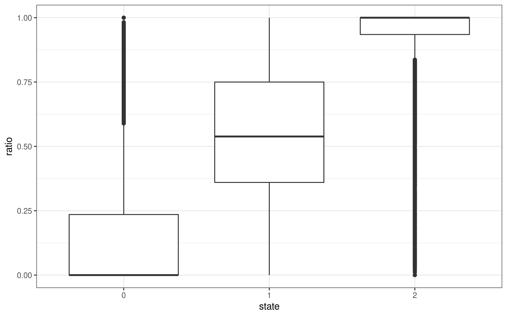

4 F2 recombination blocks
4.1 Read in data
in_dir = "/nfs/research/birney/users/ian/somites/recombination_blocks/20211027"
in_files = list.files(in_dir, pattern = "F2_", full.names = T)
# Read into list
data_list = purrr::map(in_files, function(FILE){
out = readr::read_tsv(FILE,
col_types = "ciiidii")
})
# Set names as bin length
names(data_list) = basename(in_files) %>%
stringr::str_split("_", simplify = T) %>%
subset(select = 2) %>%
stringr::str_remove(".txt")
# Reorder
data_list = data_list[order(as.numeric(names(data_list)))]
counter = 0
df_list = purrr::map(data_list, function(data){
counter <<- counter + 1
# set bin length
bin_length = as.numeric(names(data_list)[counter])
# add bin start and end coordinates
df = data %>%
dplyr::mutate(LANE = basename(sample) %>%
stringr::str_remove(".txt") %>%
as.numeric(.),
BIN_LENGTH = bin_length,
BIN_START = (bin - 1) * bin_length + 1,
BIN_END = bin * bin_length,
BIN_LENGTH_KB = BIN_LENGTH / 1e3,
READS_PER_BIN = mat + pat)
return(df)
})
4.2 Look at relationship between ratio and state
To determine which state is associated with which parental strain.
In the pipeline, we set Cab as F0_1 and Kaga as F0_2.
ratio = mat / (mat + pat), where mat = Cab and pat = Kaga.
Plot ratio against state
df_list$`5000` %>%
dplyr::mutate(state = factor(state, levels = 0:2)) %>%
dplyr::slice_sample(n = 1e6) %>%
ggplot() +
geom_boxplot(aes(state, ratio)) +
guides(colour = "none") +
theme_bw()
# Save
ggsave(here::here("book/plots/20211027_ratio_v_state.png"),
device = "png",
width = 8,
height = 5,
units = "in",
dpi = 400)
knitr::include_graphics(here::here("book/plots/20211027_ratio_v_state.png"))
This shows that state 0 is associated with a low ratio of Cab to Kaga, and therefore a call of Kaga.
Vice versa for state 2 and Cab.